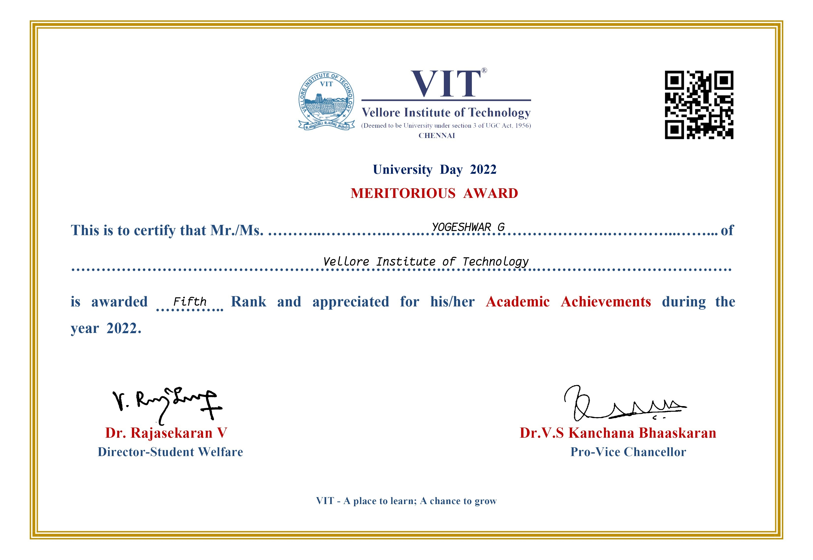
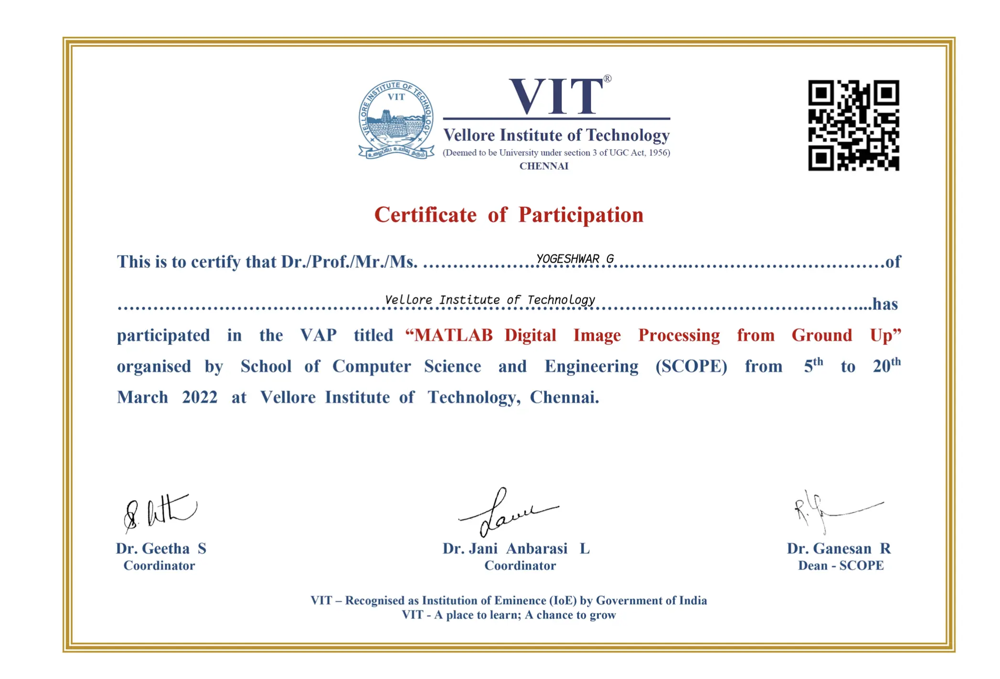
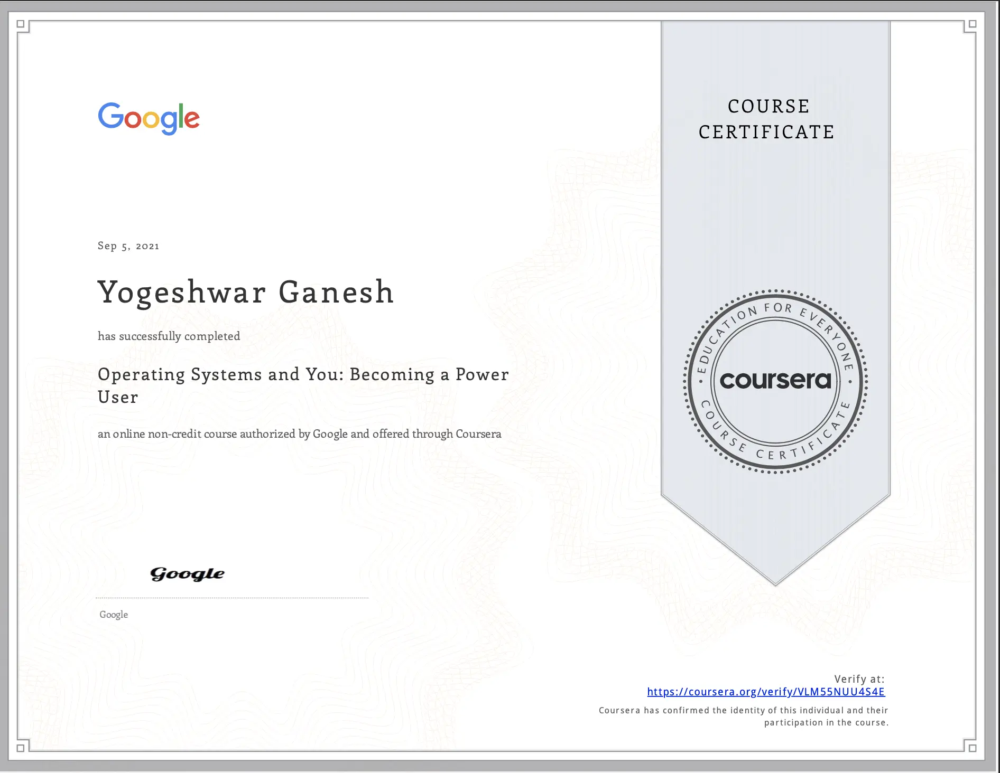
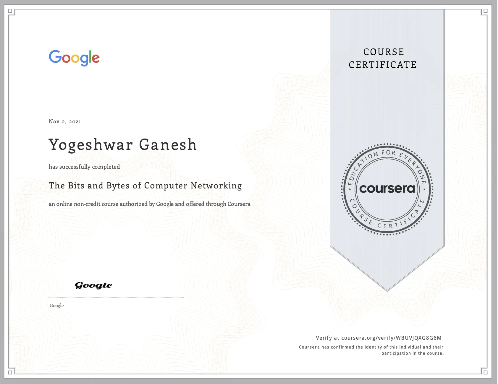
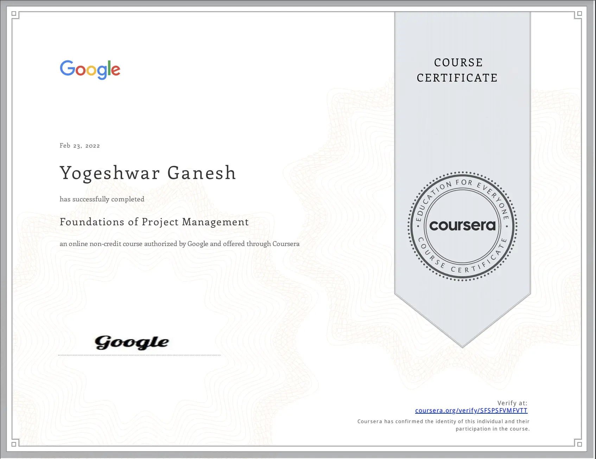
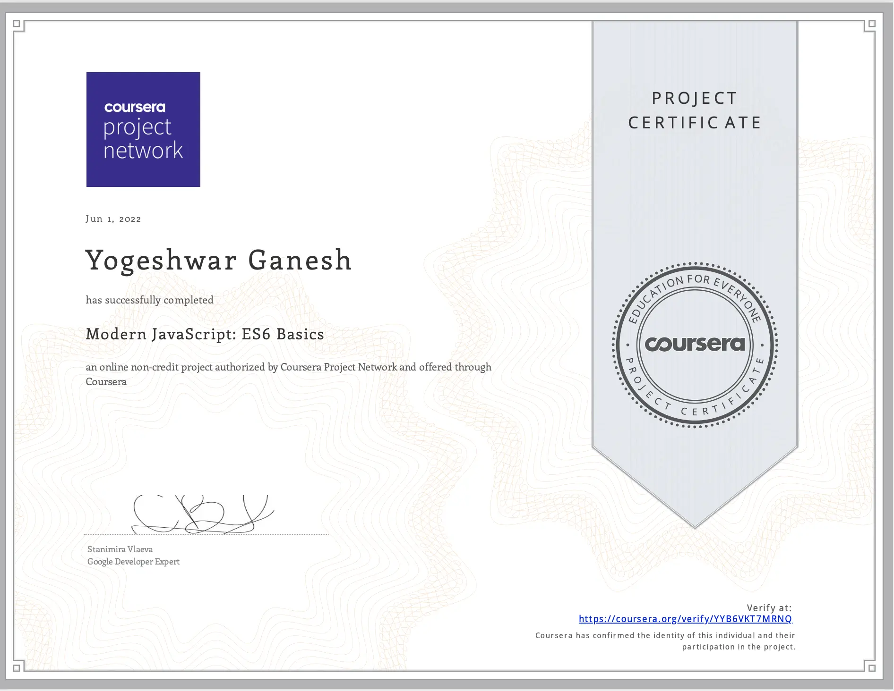

Achievements
Meritorius Award 2021
I stood as the fifth rank holder in M.Tech Integrated software engineering at VIT Chennai for the academic year 2020-2021.
Meritorius Award 2020
I stood as the tenth rank holder in M.Tech Integrated software engineering at VIT Chennai for the academic year 2019-2020.
Certifications
Digital Image Processing
I enrolled in a value-added program conducted by VIT Chennai. The program taught the basics of image processing, filters used in image processing, and types of noises in images using MATLAB.
Operating Systems and You | Becoming a Power User
I enrolled in an operating system course that briefed me on the main components of an operating system and how to perform critical tasks like managing software and users and configuring hardware.
The Bits and Bytes of Computer Networking
I enrolled in a networking course that taught the basics of networking, fundamentals of modern networking technologies and protocols, an overview of the cloud to practical applications, and network troubleshooting.
Foundations Of Project Management
I enrolled in a project management course that dealt with the foundational project management terminology and projected a deeper understanding of the role and responsibilities of a project manager.
Modern Javascript | ES6 Basics
I completed a Javascript course that helped me master modern JavaScript, starting with understanding the reasoning behind the main ES6 features - arrow functions, variables, and template literals.